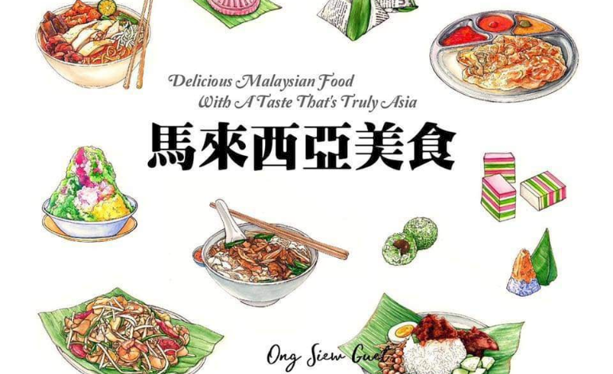

大马雪隆区7家好吃到不得了的柔佛叻沙Johor Laksa
马来西亚柔佛州的叻沙相信是许多人都非常喜欢的美食之一，那浓浓的辣鱼肉汤所带来的美味，加上那爽爽的面条搭配起来真的是超爽啊！这道美食必须搭配星级食材就是那西刀鱼和磨碎的香香椰子酱。看起来和我们吃的意大利面很相似，因为都拥有浓稠的酱汁，而柔佛叻沙就多了一份马来西亚的风味。
虽然在疫情期间，我们不能跨州前往柔佛尝试道地的柔佛叻沙，但其实雪隆区也有着7家售卖柔佛叻沙的美食店，想要满足食欲的你又怎么能错过呢？
1. D’Cengkih
相信住在TTDI一带的人都认识D’Cengkih这家美食店。这里以柔佛州著名的叻沙而闻名，除此之外还可以在这里找到各式的椰浆饭、Lotong和好吃的面食都可以在这里找到。想要来这里品尝美食一定要趁早，否则在午餐时间这里可是人山人海哦！
地址：2, Jalan Tun Mohd Fuad, Taman Tun Dr Ismail, 60000 Kuala Lumpur.
2. Siti Li Dining
Siti Li Dining提供道地的马来美食，让你享用美食的时候也能感受家的味道，而他们家的柔佛叻沙是你不能错过的美食之一。这家餐厅位于武吉白沙罗（Bukit Damansara）的马来美食餐厅有很棒的氛围，非常适合举办小型聚会。如果你有一群爱吃叻沙的朋友，不妨一起叫来这边开餐吧！既可以享受美食又可以聚会聊天，一举两得呢！
地址：15, Jalan Setiakasih 5, Bukit Damansara, 50490 Kuala Lumpur.
3. Wannah’s
隐藏在TTDI的另一颗宝石是一家柔佛州的家族企业，就位于At-Taqwa清真寺后面。这里有着许多特色菜，相信尝了一次之后，你往后也会来这边觅食。要注意的是，这里的营业时间是上午8点至下午3点，所以不要错过啦！
地址：Lot 3849, Lorong Datuk Sulaiman, Taman Tun Dr Ismail, 60000 Kuala Lumpur.
4. Lontong & Co
这家位于阿拉白沙罗（Ara Damansara）的美食餐厅，这里有著名的lontong美食、椰浆饭还有让人垂涎欲滴的柔佛叻沙。这家餐厅可以以价廉物美来形容，这也是为什么总是吸引一群热爱美食的民众前去享用美食。
地址：M-G-08, NZX Commercial Centre, Jalan PJU 1a/41, Ara Damansara, 47301 Petaling Jaya, Selangor.
5. D’Timer Cafe
D’Timer Cafe有两家分店，一家在Wangsa Maju而另一家则在Damansara Utama。这里除了可以吃到美味的柔佛叻沙之外，还提供美味的蛋糕和咖啡。想象一下，在炎热的天气里吃着热腾腾的叻沙加一杯冰咖啡，这是多么刺激的搭配啊！
地址：11-G, Blok B, Plaza Wangsa Maju, Jalan Maju Ria 2, Seksyen 10, Taman Sri Rampai, 53300 Kuala Lumpur.
6. Adu Sugar
位于Lucky Garden的Adu Sugar可说是另一颗隐藏的宝石。这里的柔佛叻沙配上浓浓的肉汁，在上面还配有长豆和辣椒，单看卖相就已经很吸引了。厨师阿杜·阿姆兰·哈桑（Adu Amran Hassan）不仅是一位才华横溢的厨师，而且还是一位不可思议的画家，在店里你会看到他的艺术品陈设当中，边吃美食边欣赏艺术品，相信是不错的体验。
地址：10a, Lorong Ara Kiri 2, Lucky Garden, 59100 Kuala Lumpur.
7. OpenHouse
这家位于KLCC的OpenHouse可说是马来西亚最好的小餐馆之一，特别推荐他们家的柔佛叻沙。他们家所选用的面条是意大利面，在面条上是白沙丁鱼肉、白虾、豆芽和蔬菜。如果你不能前去品尝，那么就上网订购吧！味道也一样美味哦！
地址：G48, Suria KLCC, Kuala Lumpur City Centre, 50088 Kuala Lumpur.